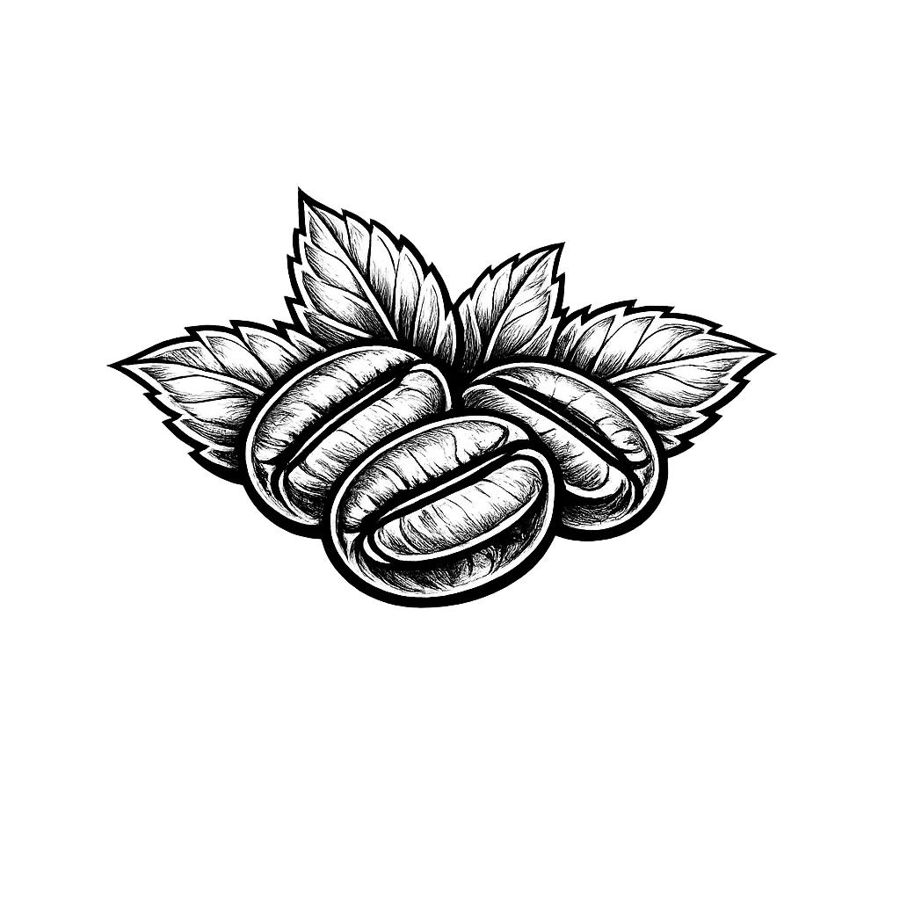

Café Pontes
Simplicidade com sabor e energia
Simplicidade com sabor e energia
Soda italiana refrescante e equilibrada, combinando o doce do morango com toque cítrico da laranja e o frescor da menta
Peça AgoraCreme brulee clássico, cremoso e delicado, com base suave de baunilha e uma camada de açúcar caramelizado crocante
Peça AgoraBanoffe com sorvete de creme, combinando banana, doce de leite e base crocante, finalizada com uma bola de sorvete
Peça Agora
A Cafeteria Pontes nasceu em 2010, com a proposta simples de criar
um espaço acolhedor onde o café fosse mais do que uma bebida, fosse
um momento. Fundada por Maria, sempre carregou um significado
especial: era o seu grande sonho construir algo que unisse pessoas e
criasse memórias.
Com o tempo, a cafeteria conquistou seus clientes com sabor, cuidado
e um ambiente intimista, tornando-se um verdadeiro ponto de
encontro. Mais do que um negócio, Maria sempre desejou que seu
legado fosse passado para seus filhos, transformando a Cafeteria
Pontes em uma tradição de família, mantida com o mesmo carinho e
dedicação ao longo das gerações.